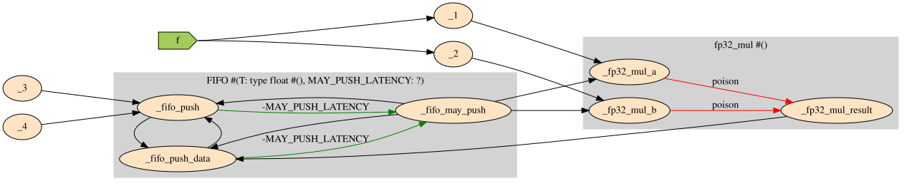
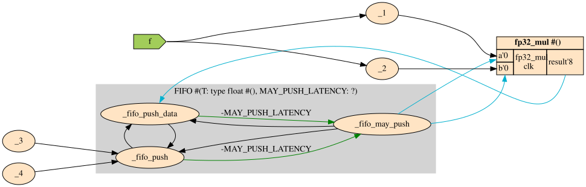
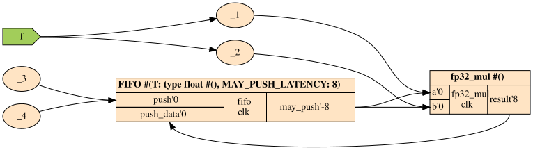
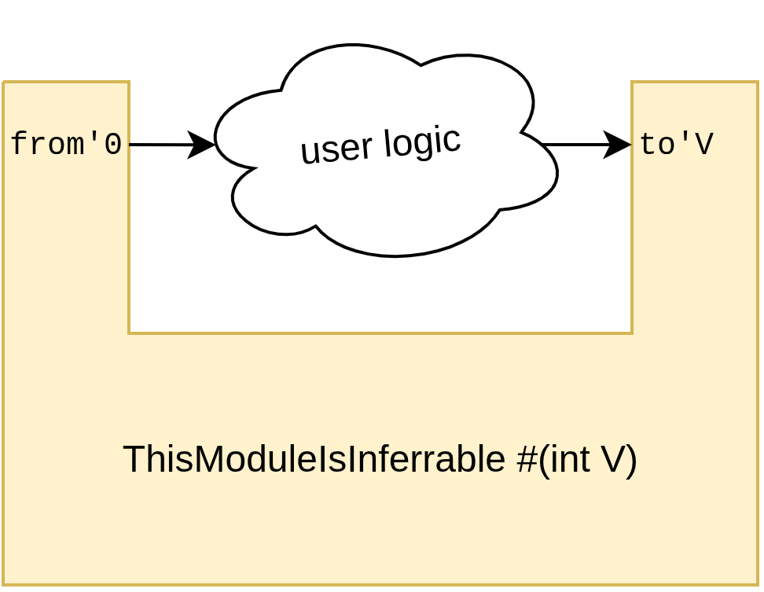

Latency Inference
Besides computing the absolute latencies of all wires in a module based on the absolute latencies of all of its submodules ("Latency Counting"), it is also possible to infer the parameters of your submodules based on the latencies present on their ports, which we term "Latency Inference". For this, one or more parameters of your Latency Sensitive module must be inferrable.
Latency Inference starts at the declaration of your module. You must attach absolute latency annotations to at least an input and an output port of your module, and the difference between those absolute latencies must be linear in exactly one integer parameter of this module. Since this is a bit of a mouthful, let's look for example at FIFO:
module FIFO #(T, int DEPTH, int MAY_PUSH_LATENCY) {
domain push_dom
output bool may_push'-MAY_PUSH_LATENCY
action push'0 : T push_data'0
domain pop_dom
output bool may_pop'0
action pop'0 : -> T pop_data'1
}
As can be seen on FIFO's inference diagram. The green lines show that MAY_PUSH_LATENCY can be inferred from the paths from may_push to push, and may_push to push_data. Now, how precisely is this inference done?
For a very minimal example of inference, InferFIFO instantiates FIFO and a fp32_mul operator.
module InferFIFO {
FIFO#(DEPTH: 256) fifo
input float f
when fifo.may_push {
// fp32_mul has 8 cycles latency
float f_squared = fp32_mul(f, f)
fifo.push(f_squared)
}
}
So, in this example, there is a path from fifo.may_push, through activating the fp32_mul, to fifo.push_data. Initially, right after execution the module looks as below. Neither fifo, nor fp32_mul have been instantiated yet. fifo might attempt to do a Latency Inference for MAY_PUSH_LATENCY on that path, but since fp32_mul hasn't been instantiated yet, and therefore its latency isn't known yet, the inference attempt gets poisoned.

After one step of typechecking, the compiler has seen fp32_mul has no template parameters and thus instantiates it. From the instantiation, the compiler learns it has a latency of 8 clock cycles. This new information updates the Latency Counting graph, and importantly removes the poison edges and replaces them with "Latency 8" edges.
fifo makes a second attempt at Latency Inferring MAY_PUSH_LATENCY, and this time, inference succeeds. The search algorithm travels out from may_push, through the now known 8 cycle latency of fp32_mul, and returns to push_data with a measured distance of 8 cycles. From this, MAY_PUSH_LATENCY=8 is inferred.

With all of fifo's parameters now known, the compiler can also instantiate it.

Designing Latency Sensitive Interfaces
Fundamentally, making a module parameter Latency Inferrable isn't difficult. Simply make sure to annotate have at least one input port, and one output port in the same domain with Absolute Latencies. If the Absolute Latencies you specified are at an offset linear in that module parameter, then it'll be possible to infer the parameter from those ports1.
Caveat, the compiler is fairly lenient in the kinds of expressions can be in such inferrable annotations, but complex operations, like pow2, clog2, etc will prevent the compiler from inferring the linearity. It's best to keep such expressions simple. +, -, * all work, but nothing beyond those.
In its most basic form, a Latency Sensitive module looks like this:
module ThisModuleIsInferrable #(int V) {
output bool from'0
input bool to'V
}

When some cloud of user logic is attached between the output from and input to, that has some number of pipeline stages. Let's say the user logic has 5 pipeline stages, then any value of V < 5 would cause a Net Positive Latency Cycle Error. Since there is only one place that can infer V, it will in fact be inferred to V=5. However, in the case there are multiple places in the module where the parameter can be inferred. In that case, perhaps a value higher than 5 might be chosen, if another constraint requires it.
Tip: Specify All Port Latencies for latency-sensitive modules.
For latency-sensitive modules, it is best to attach explicit latencies to all their ports, and to try to make these latencies as simple as possible. Any pair of ports between which the latency isn't known to be a constant from the annotations (such as '3 -> '7), or is inferrable (-V -> 3) 2, will be seen as a Poison edge.
which will not affect other inference attempts, since the assumption is that V will be inferred such as not to affect the surrounding pipeline.
For non-latency-sensitive modules usually don't need to have their port latencies specified explicitly, since they likely will be instantiated early, in which case exact latencies are known.
Tip: Be agressive in splitting latency-sensitive modules into separate domains Domain
Really, making latency sensitive modules is just an exercise in avoiding any and all Poison Edges. By splitting unrelated interfaces of the module into separate domains, no poison edges can be formed across the domain boundary. For an example of this, see FIFO.